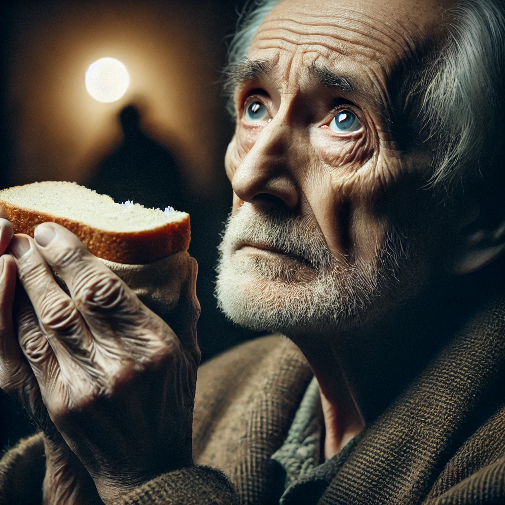

lesmiserables
목차
작가
Victor Hugo
출판일
1862년
감상평에 대한 AI그림
인간의 본성과 사회적 부조리를 깊이 있게 탐구한 작품으로 장발장의 삶을 통해 절망과 슬픔 그리고 용서와 희망의 가능성을 보여준다. 프랑스 절대 왕정 시기에서 하층민들이 얼마나 고통을 받았는지 얼마나 힘들었는지를 숨김없이 표현한 작품으로써 읽으면서 어두운 분위기와 탄탄한 스토리에 빠져들어 시간 가는 줄 모르고 읽은 작품이다.

감상평에 대한 AI평가
이 감상평은 다음의 감정을 중심으로 구성되어 있습니다
✨ 절망과 슬픔 – 장발장의 삶을 따라가며 인간이 처한 극한의 고난과 사회적 부조리를 마주하게 된다. 하층민들의 고통이 적나라하게 묘사되어 읽는 내내 깊은 안타까움과 분노를 느끼게 된다.
✨ 용서와 희망 – 끝없는 고난 속에서도 인간성의 가능성을 보여주며, 장발장의 변화와 희생이 감동을 준다. 어두운 현실 속에서도 희망이 존재할 수 있음을 깨닫게 해준다.
✨ 몰입과 감동 – 탄탄한 스토리와 강렬한 분위기 덕분에 시간 가는 줄 모르고 빠져들게 되는 작품이다. 어두운 배경이지만 그 속에서 피어나는 인간애가 깊은 여운을 남긴다.